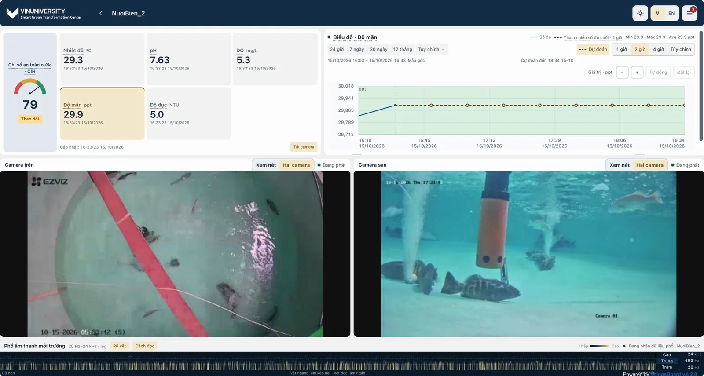
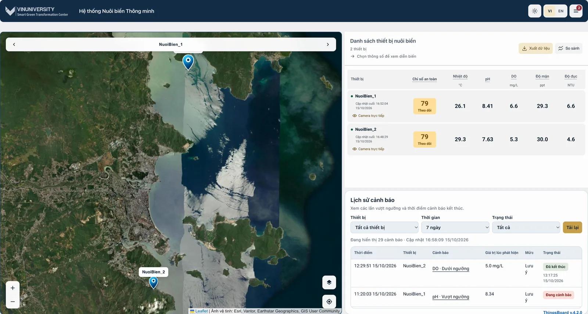
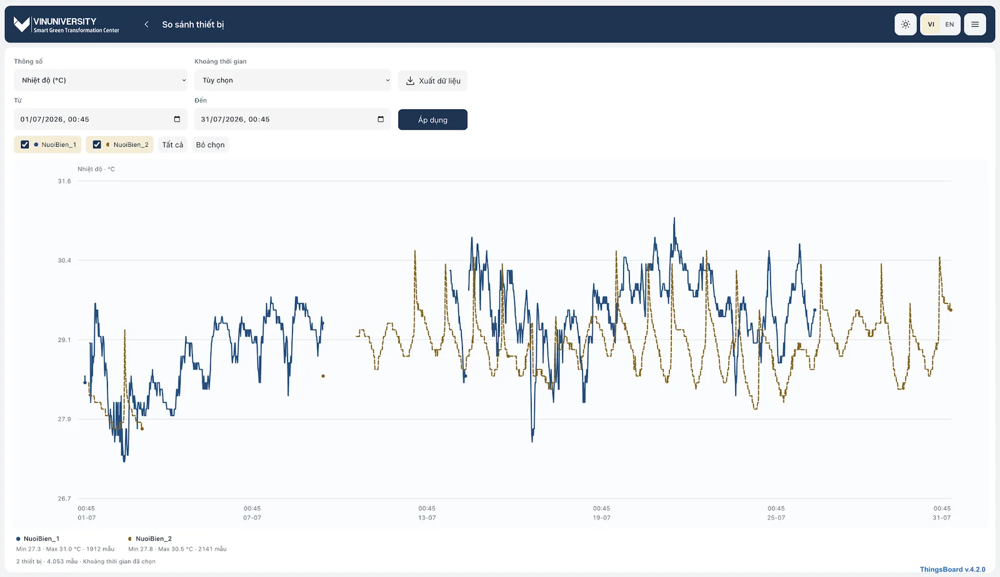
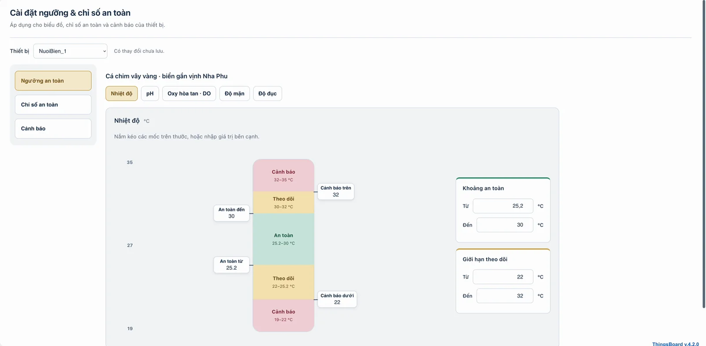
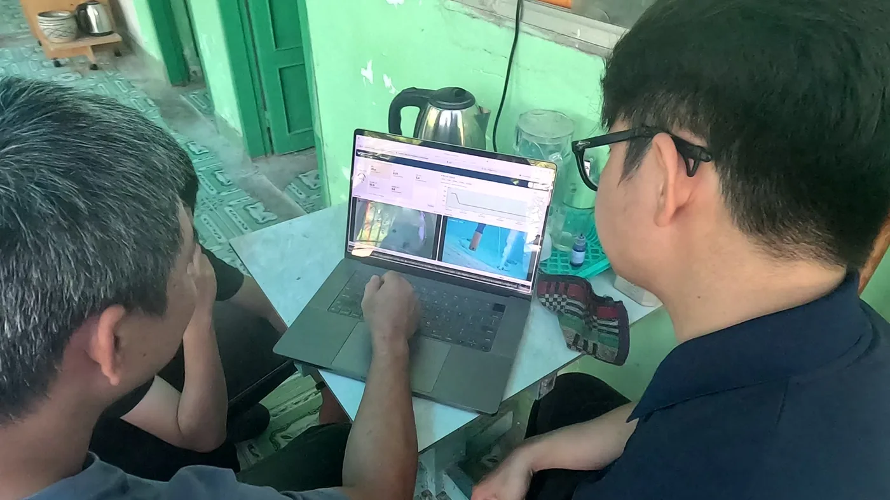
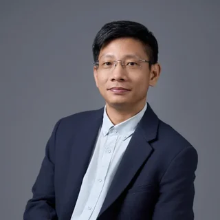
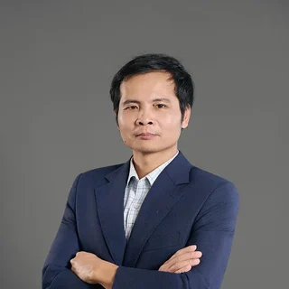
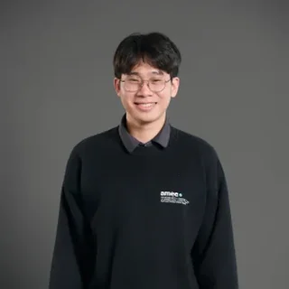
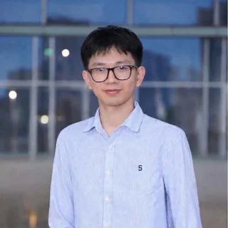
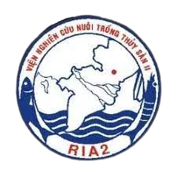

Aaron
AaronSmart marine aquaculture
Offshore cage farming requires continuous monitoring of water quality and fish condition, while the open sea is harsh on equipment and short of power and connectivity. The project develops an automated monitoring system that combines water-quality sensors, underwater imaging and hydroacoustics, validates it in four settings from laboratory tanks to floating cages in Nha Phu Bay, and delivers the data to operators through a monitoring application.

A multi-source monitoring system and its field validation
Water-quality sensors, underwater imaging and hydroacoustics, validated in four farming settings from laboratory tanks to offshore cages.
Read part A ↓
Data transmission and use
Connecting stations in places with poor infrastructure and presenting multi-source data to operators in one monitoring application.
Read part B ↓A multi-source monitoring system and its field validation
Research questionHow should an automated station combining water-quality sensors, imaging and hydroacoustics be designed and validated to run reliably in sea-farming conditions?
A.1 System architecture
Each station combines three complementary data sources. A sensor cluster continuously measures five water-quality parameters: dissolved oxygen, pH, temperature, salinity and turbidity. Cameras above and below the surface observe the fish and the fouling of the lens. Hydrophones record underwater sound, such as feeding, to estimate appetite. The offshore station runs on solar power with battery storage and sends data over mobile networks to the servers.
A.2 Validation in four settings
The system was validated in settings of increasing harshness. In May 2025 the sensors were calibrated on test tanks at the Vietnam National University of Agriculture, where a single sensing chamber samples several tanks in turn (Figure 1a). In August 2025 the system moved to indoor raceways at the Research Institute for Aquaculture I, where humidity and salt spray began to test the hardware (Figure 1b).
 a
a b
bIn March 2026 station 1 was installed on the experimental cage farm of Assoc. Prof. Ngo Van Manh (Nha Trang University) in Nha Phu Bay, powered by solar panels (Figure 2a). In April–May 2026 station 2 was installed on outdoor circular tanks at the Research Institute for Aquaculture III, adding hydrophones (Figure 2b).
a b
bOffshore operation exposed weaknesses that the laboratory did not. The cage area has barely any mobile signal, so the link moved to a 5G SIM; then the router failed. Sensors drifted, a sensor cable snapped, and once the underwater camera lost its mounting screws. Almost every field trip involved on-site repairs (Figure 3).
 a
a b
bA.3 Field log
| 05.2025 | Sensor calibration on test tanks at the Vietnam National University of Agriculture. |
|---|---|
| 08.2025 | Trials on indoor raceways at the Research Institute for Aquaculture I. |
| 03.2026 | Station 1 installed on the Nha Phu Bay cages. |
| 04–05.2026 | Station 2 installed at the Research Institute for Aquaculture III; station 1 repaired. |
| 06, 08, 10.2026 | Routine maintenance; link, sensor and camera failures handled. |
Data transmission and use
Research questionHow should data from stations with limited connectivity be transmitted and presented so that operators can use them in practice?
B.1 Connectivity from the field
The stations sit on cages and outdoor tanks where mobile connectivity is unstable. I set up the virtual private network (VPN) for station 2 and maintain the VPN links that let the team’s servers and devices reach all three GREEN-X stations (two aquaculture, one reef), and work with Pham Minh Hoang on link failures in the field.
B.2 The monitoring application
The data are presented in a monitoring application I designed on ThingsBoard. The overview places the stations on one map with the latest readings, a water-safety index and an alert history (Figure 4a). Each station’s detail view shows every parameter over 24 hours to 12 months, with two live cameras and the hydrophone sound spectrum (Figure 4b).

aBeyond live monitoring, operators can compare a parameter across stations over the same period (Figure 5a) and set safe and watch thresholds for each parameter (Figure 5b). Alerts are sent on Telegram, and each account sees only its assigned stations.

a
bIn October 2026 the team worked with staff of the Research Institute for Aquaculture III on operating the application at station 2 (Figure 6).

Publications

In the news
GREEN-X has reported on the project’s working sessions: with the Nha Trang Bay Management Board, 22.08.2025 and with Khanh Hoa provincial departments, 16.03.2026.
Research team






Institutions and partners

Research Institutes for Aquaculture I and IIINational research institutes for aquaculture Nha Trang UniversityUniversity for fisheries and marine science
Nha Trang UniversityUniversity for fisheries and marine science